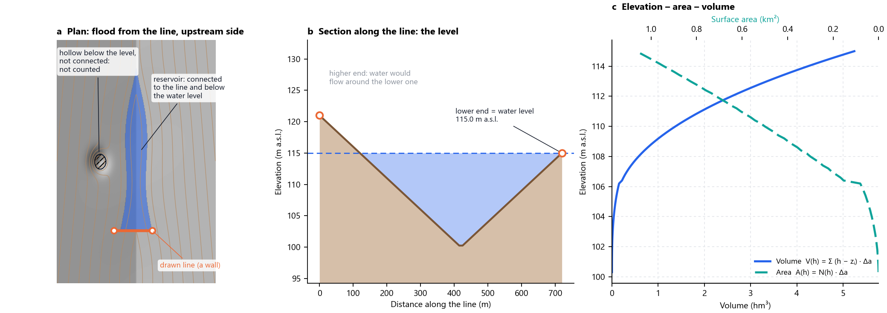

From a line to a reservoir
Everything comes from the DEM. No contour layer, no other parameters.
The whole process
The idea in one figure

The steps
1 · Water level
The ground is sampled along the line. With your optional limit:
2 · Upstream side
A short test flood runs on both sides of the line's lowest point. Downstream the water drains away along the river; the side where it rises is the reservoir.
3 · Connected water (flood fill)
From the line, cells are visited in order of their spill level, the water level at which each one joins the reservoir (4-connected neighbours, never across the line):
- stops at h: the reservoir is complete
- reaches the far side of the line: a low point in the rim, so the level is lowered there
- reaches the window edge: the window grows (step 4)
4 · A window that follows the water
The window starts at 20× the line length (5–30 km) and only the side the water reached is doubled. Downloaded DEMs come in cached 0.25° tiles, so growing fetches only new tiles.
5 · Elevation–area–volume
With cell area Δa, ground zi and spill level si of every reservoir cell:
Cells are sorted once by spill level, so the whole curve is exact and needs no re-flooding.
6 · Shoreline and depth
The outline is a sub-cell contour at h on the reservoir cells; the depth raster is h − z.
Where the method comes from
The method is the one of Reservoir Creator 1.0 (Gurbuz, 2021): a dam line across a valley defines the reservoir behind it, the water level is the highest level the line can hold, and the elevation–area–volume curve is computed from the DEM cells of the reservoir. Version 2 keeps these principles and changes how the reservoir's extent is found:
| Version 1 | Version 2 | |
|---|---|---|
| Water level | highest contour crossing the line on both sides | lower end of the line (same principle, from the DEM) |
| Extent | that contour, closed by the dam line | cells connected to the line and below the level |
| Area, volume | cell count · Δa, Σ(h − z) · Δa | same formulas, exact at every level |
| Inputs | dam line, contour layer, DEM | dam line, DEM |
The connectivity step uses the standard Priority-Flood technique, described in Barnes, Lehman & Mulla (2014), Computers & Geosciences 62, 117–127.